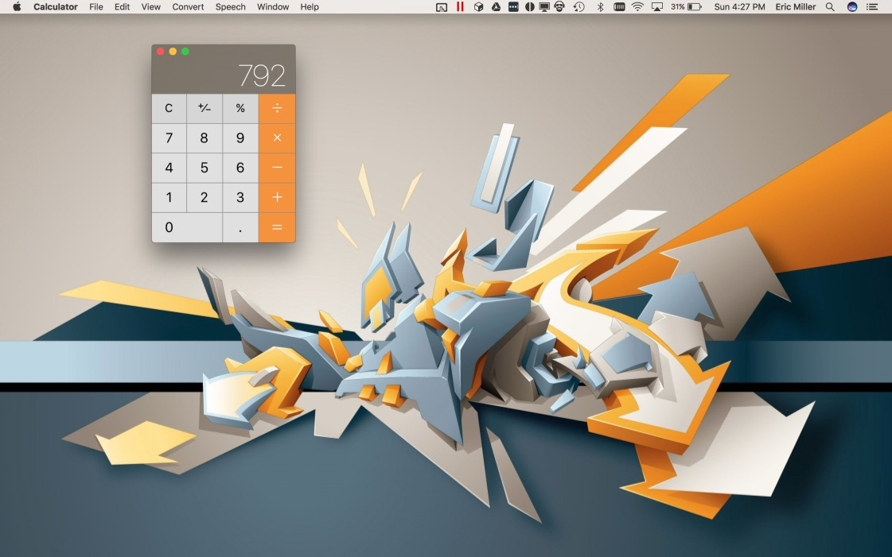
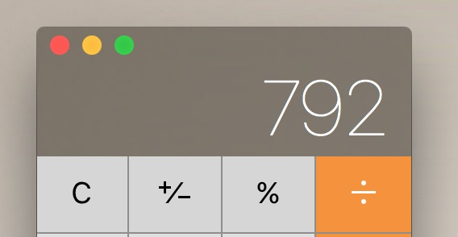
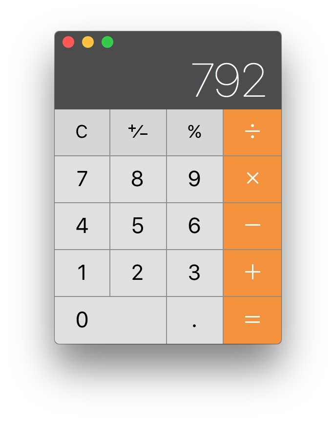
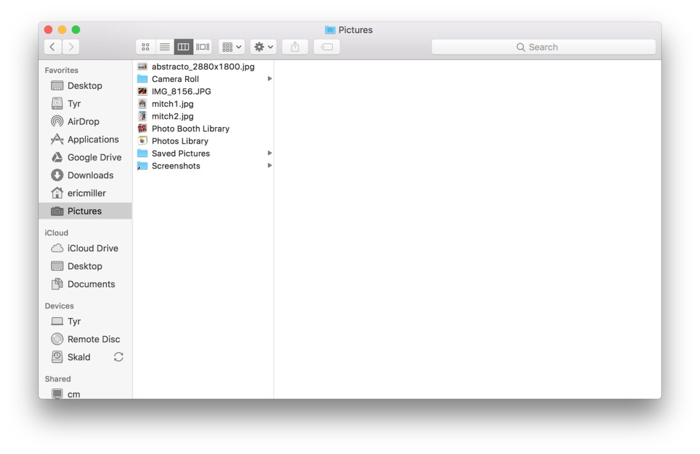
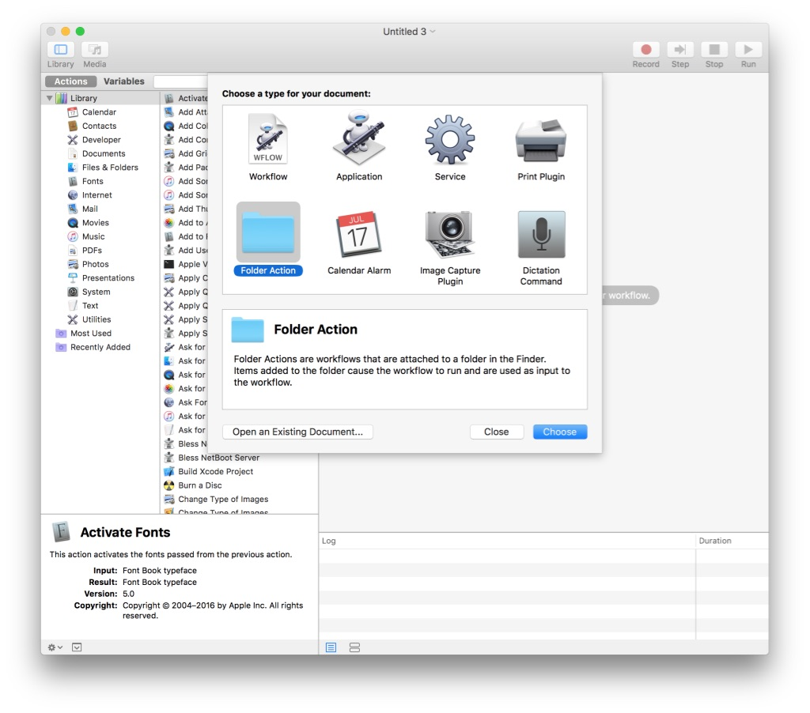
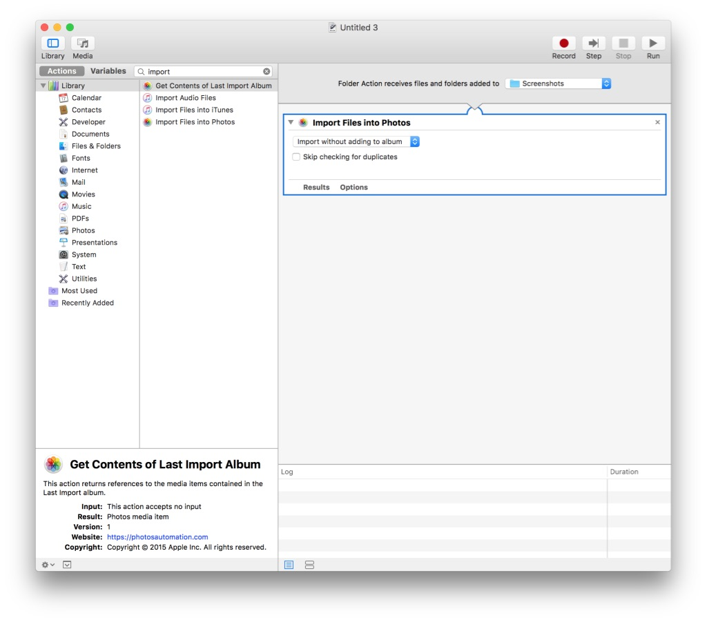
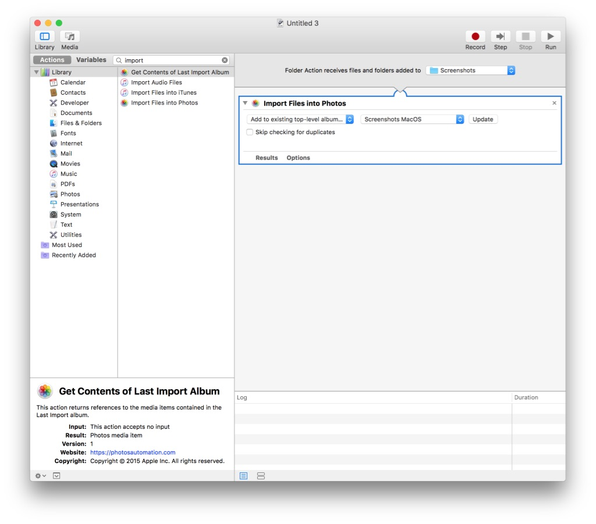
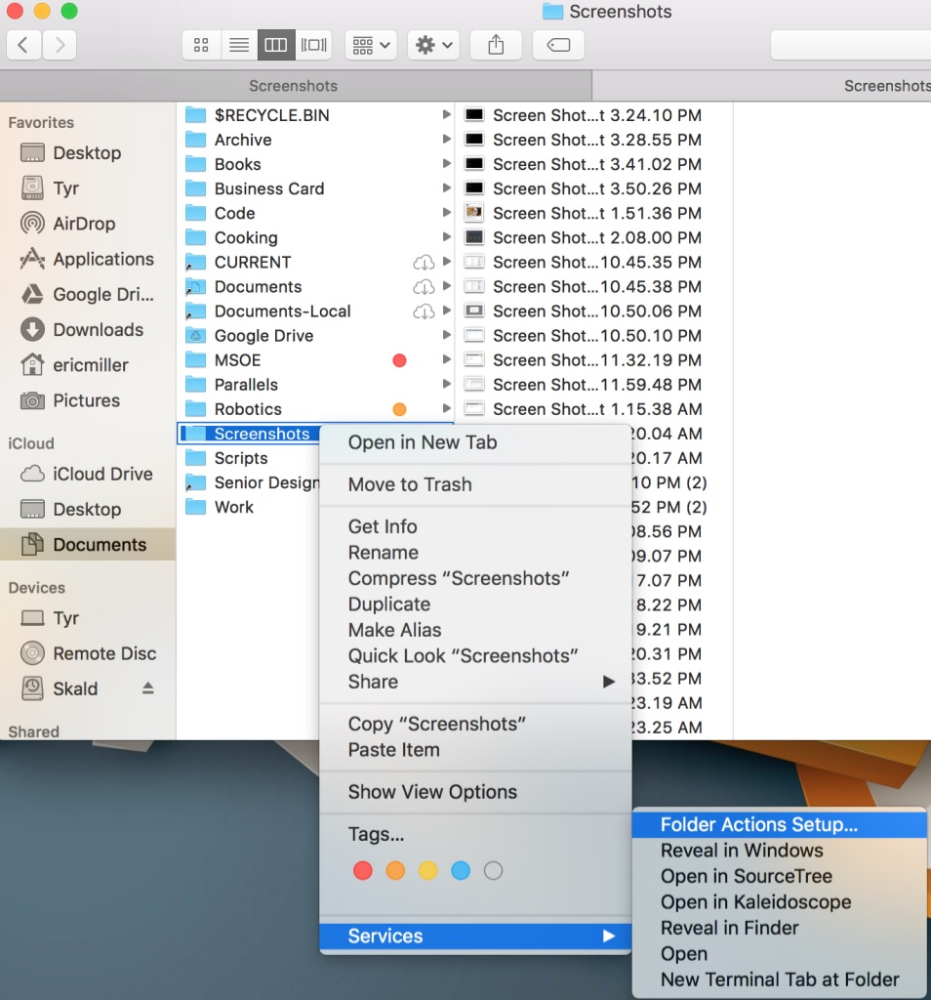
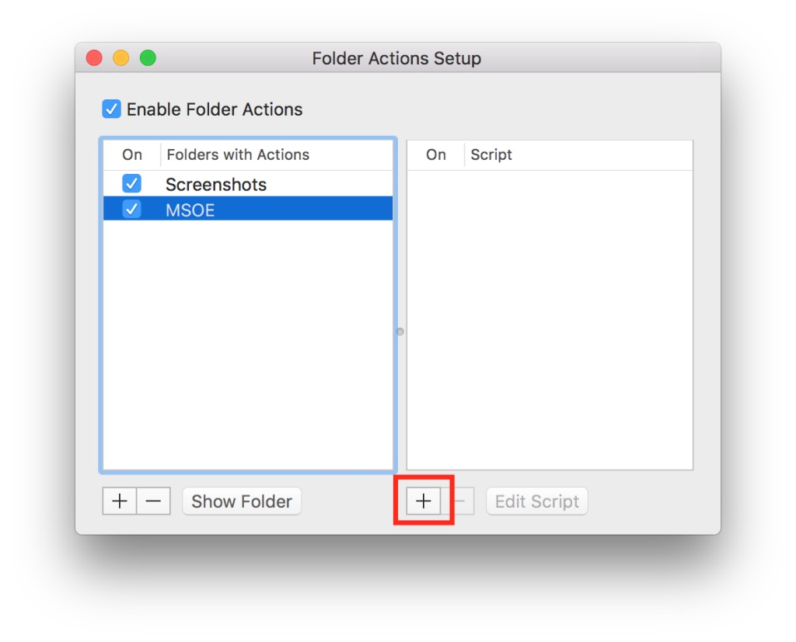

Automatically Adding Screenshots to Photos in MacOS
I take a lot of screenshots. I use them for my website, for memory, for laughs, and a lot more. However, I also take lots of screenshots on my phone. So it winds up being really weird (and inconvenient) when the screenshots on my computer and the screenshots on my phone are organized differently and in completely different places.
So naturally, being the procrastinating programmer I am, I engineered a solution to consolidate everything in one nice, organized package. Basically, I set up a simple app/script that anytime I take a screenshot on my computer, it gets added to Photos.app, and shared in a simple, clean way across my devices. To enable iCloud Photo Sync across your devices, open System Preferences and navigate to the iCloud preference pane. Check the checkbox next to “Photos”. That’s it!
I’ll tell you know, this can get a bit technical, but don’t worry. I’ll be here, going step by step, and the entire process is perfectly safe.
Outcome #
Whenever you take a screenshot with your Mac, it will be uploaded to Apple Photos in a folder called “MacOS Screenshots”, and shared across devices (if iCloud sync is enabled).
Caveats #
When I set this up, I initially tried to unify my iOS screenshots and my MacOS screenshots into a single folder. Unfortunately this isn’t quite easily possible (that I know of) without jailbreaking.
How to Take Screenshots #
MacOS has some pretty useful, and pretty powerful, screenshotting tools. There are three important ones, which all have slightly different effects.
1. Full Screen #
This mode takes a screenshot of your entire screen. Everything is visible. This is quick and easy, but if you’re sharing screenshots publicly, it may give out more information than you want. To take this kind of screenshot, the shortcut is cmd-shift-3. Following is what the result will look like.

2. Grabbing #
This mode allows you to specify (“Grab”) a portion of your screen and save that. This lets you choose a more manageable chunk of your screen to use as a screenshot, rather than the whole thing. The shortcut is cmd-shift-4. Once this is done, your cursor will turn into a crosshair. Click and drag over the area you want to screenshot. Here’s what that could look like.

3. Window Screenshots #
This mode takes a screenshot of just one application window. This is nice, and it’s what I usually use in my posts and tutorials. To use it, you first enter the Grabbing shortcut, cmd-shift-4. Then, press space. Your cursor will turn into a picture of a camera. Then, just click on the window you want to screenshot. Another nice side effect of this kind of screenshot is that, unlike the other two, it ignores any transparency effects, so it looks very clean. Here’s an example.

Step 1. Isolating Screenshots #
Historically, I’ve always set my computer to save screenshots to a special screenshots folder. I recommend doing this here too, because it simplifies things and minimizes any potential weird side effects by ensuring a sanitary working space. To do this, I recommend creating a folder in the Pictures folder (this can be found in your home directory) called “Screenshots”. Mine looks like this:

The first step here is to download OnyX. This can be done without OnyX, but this is the easiest way to do it. When you first open OnyX, it will give you some instructions that will allow it to function properly. Follow these closely and carefully. OnyX is a safe tool, but also a very powerful one. This means if it doesn’t have the resources it needs, it may not be able to do things correctly. NOTE: When you launch OnyX, it will temporarily lock up your computer. This is normal, just wait for it to finish. It could take as long as a few minutes.
Now, click on the “Parameters” tab. This tab can do lots of fun things, and you can feel free to explore
these on your own. However, we will now navigate to the “General” subtab as shown. Next, click the “select”
button next to the “path” field as shown. Now, in the popup window, select the Screenshots folder you just
created. **NOTE: I have a slightly different configuration, for personal backwards compatibilty reasons,
so my path is different. Yours should look something like: /Users/yourusername/Pictures/Screenshots.
Now take a screenshot; instead of showing up on the desktop, it should appear in your screenshots folder. Now you have a dedicated screenshots folder where everything can go! We’re halfway there.
Step 2. Preparing Photos.app #
Now, we have to do some work with Photos.app to make sure our step 3 works right. This is pretty easy. First, open Photos. In the top toolbar, there should be a large “plus” button. Click it, then in the menu it opens, select “Album”. You can name this album whatever you want, but you’ll need to remember it for step 3. I recommend something like “Screenshots: MacOS”.
Once this album is created, it should be empty - this is ok.
Step 3. The “Folder Action” #
Brace yourself, this is probably the most complicated part.
Open /Applications/Automator. Select “New Document”. It will give you a series of choices for the type
of document to create, as seen below. Select “Folder Action”.

In the top right-hand corner, there’s a drop-down menu that says “Choose folder.” Click this, select “Other”, and then choose the Screenshots folder we created in step 1.
In the search bar on the upper left-hand side (Says “Name” in gray), type “Import”. A few options will show up just below it - click and drag the file to the right-hand side, so your screen looks like mine.

Now, in the drop-down menu that says “Import without adding to album”, select “Add to existing top-level album”. A new field will show up just to the right of that - select the screenshots album you created in step 2. Mine looks like this:

Now, press cmd-s to save. Name the file something recognizable, like “Screenshots - Import to Photos”.
Go back to your screenshots folder that you made in step 1. Right click the folder, and select Services > Folder Actions, as shown below. Finder will offer a bunch of suggestions - press cancel. Make sure that the “Enable Folder Actions” checkbox is checked, just like in my screenshot. Make sure that the folder and script are both checked as well, just like in mine.


Congrats #
Now, whenever you take screenshots on your mac, they will be added to Photos and uploaded to iCloud (if enabled.)